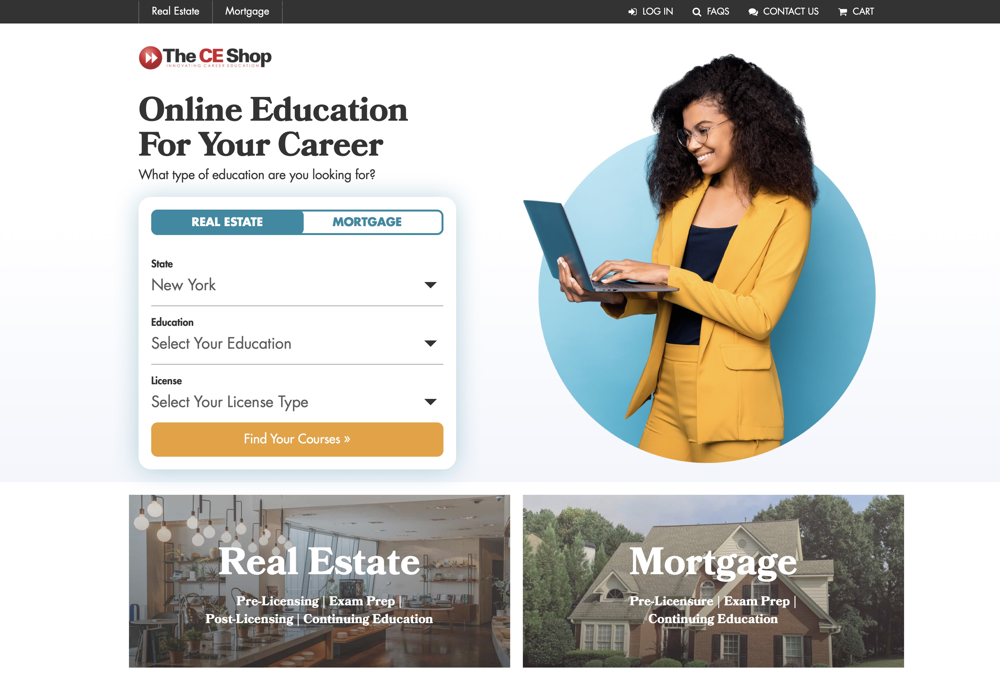
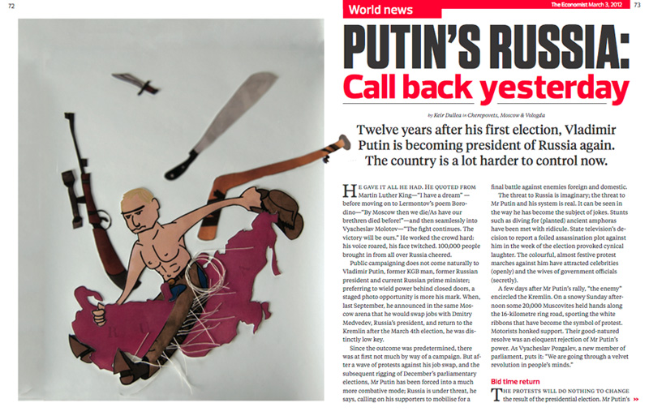
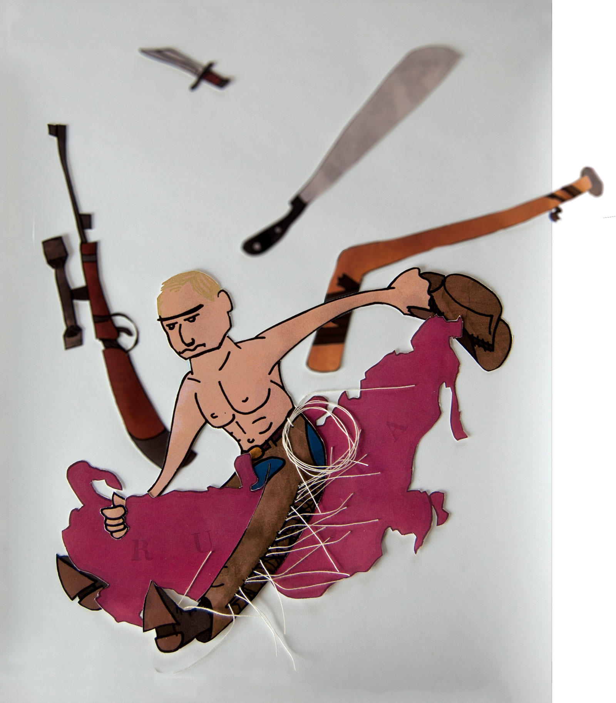
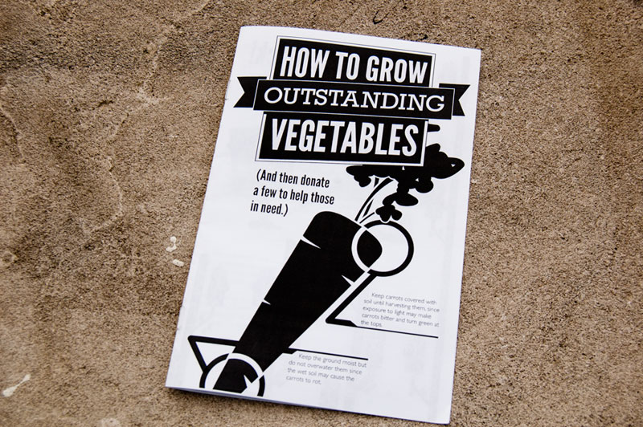
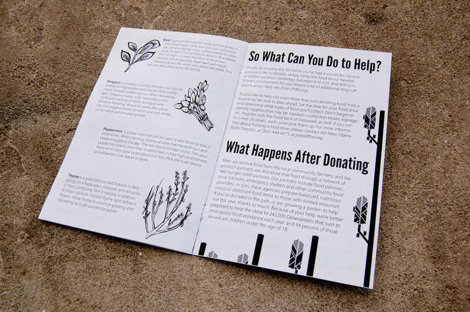

Ligatour: A Tour of Typography Over Time
Ligatour is a browser-based application to learn about typography. In this prototype, three lessons are built out, and the table of lessons contains possible lessons to be built. The focus of Ligatour is to teach typographic concepts using interactive, self-guided learning rooted in the historical order and context of typography. Ligatour is the result of my work for my Masters of Fine Art.

The CE Shop
I work as a senior UI/UX designer at The CE Shop, an education provider for professional licensing. In my four years there, I've launched multiple new products, restructured the navigation, and launched a new vertical. I optimize for conversion rate by running usability testing and A/B/n tests, including ecommerce pages and many landing pages. The CE Shop aquired several companies and I've been deeply involved with the design and ecommerce efforts to consolidate branding for the education.
Chelten House
Worked with a team to develop the design and front end programming for a Chelten House rebrand. View the Chelten House website here.
Virtua
Worked with a team to develop a slight redesign and front end programming, as well as responsive layouts for Virtua, a healthcare company based out of New Jersey. View the Virtua website here.
Mercer Museum & Fonthill Castle
Worked with a team to develop the design, branding, site structure, and front end programming for the Mercer Museum & Fonthill Castle. View the Mercer Museum & Fonthill Castle website here.
PETA - How to Wear Vegan
Worked with a team to develop the design and front end programming for this feature on the PETA website. View the PETA feature How to Wear Vegan here.
 
Putin's Russia
A two-page comp spread for The Economist with illustration and design work.
 

Food Bank Zine
A zine for the Food Bank of Delaware's Plant a Row program, encouraging farmers and gardeners to plant an extra row in their gardens and donate the food to the food bank.